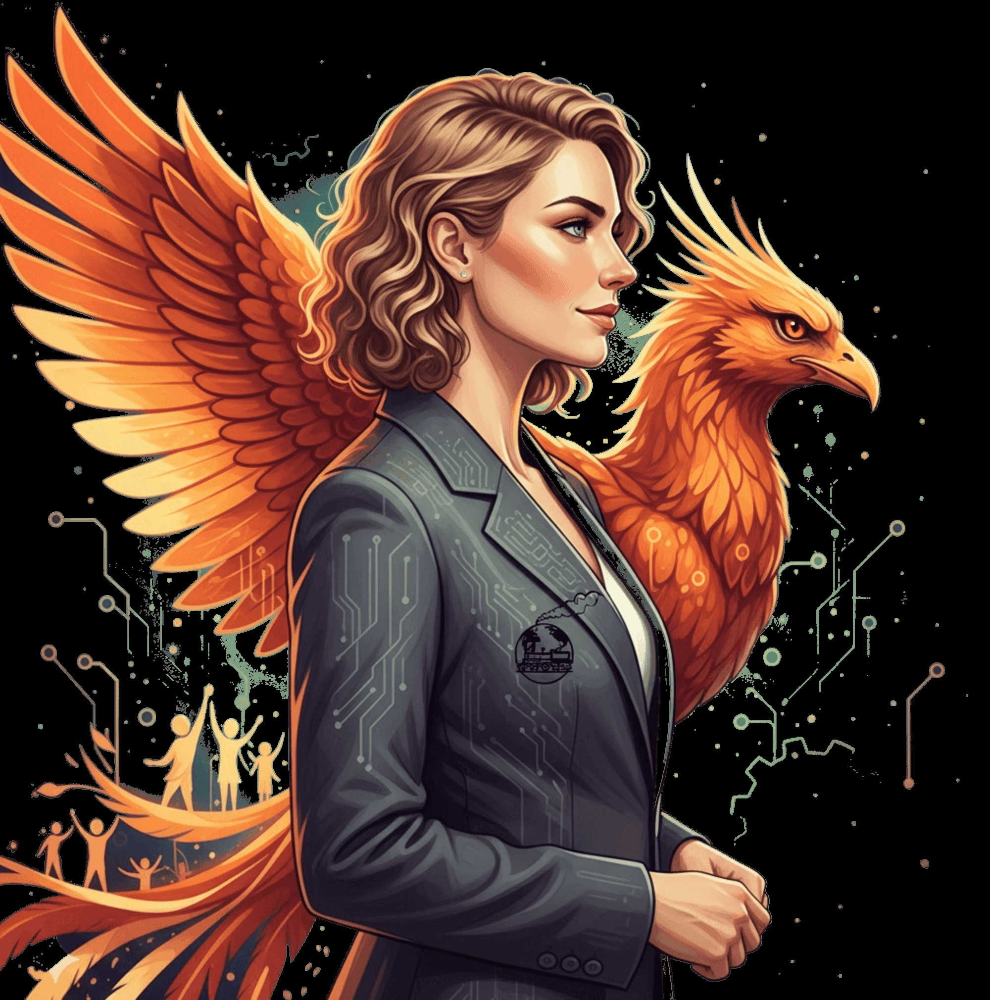
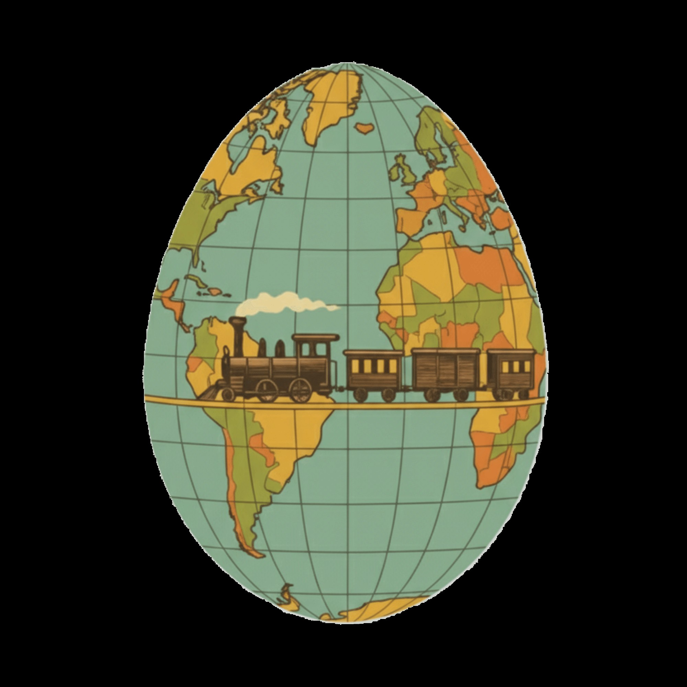
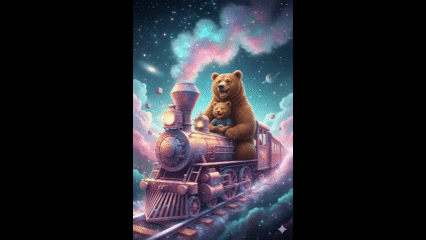
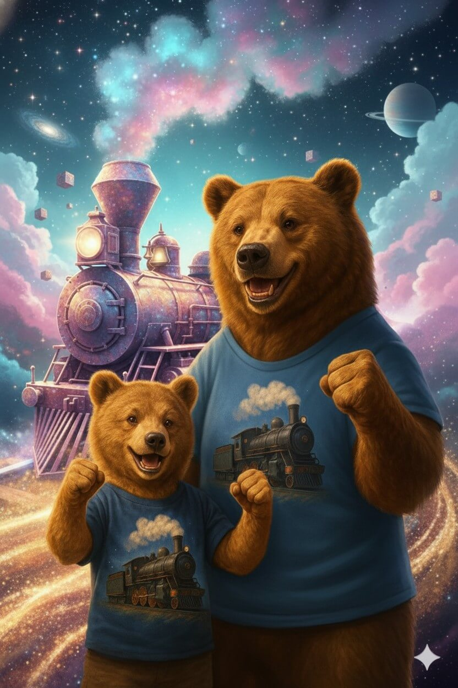
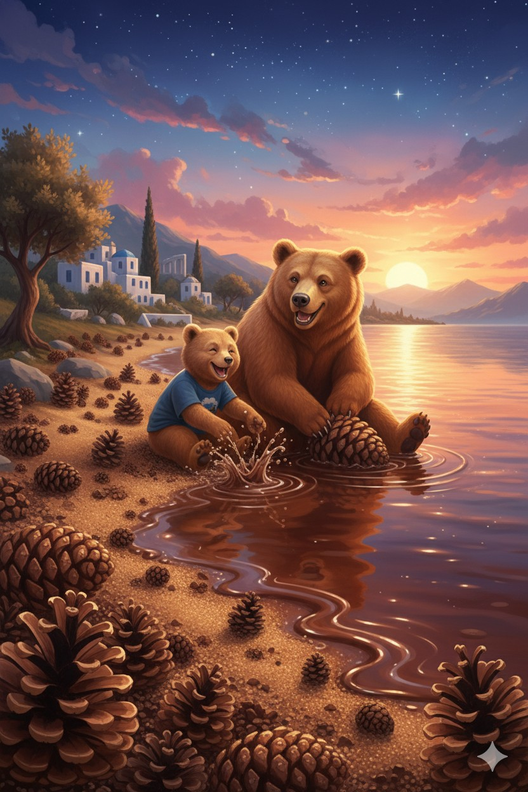
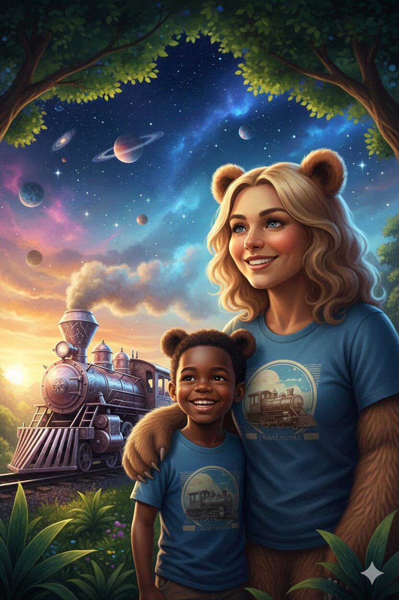
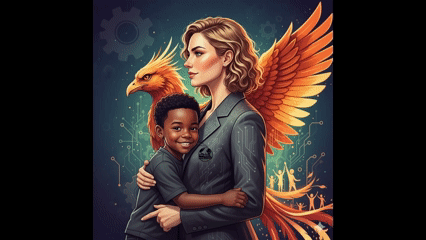

| Category | Mission | Tech |
|---|---|---|
| Photini™ apps | Advocacy & case documentation | Go-Driver • Evidence management • AI compliance |
| Rhea Network™ & Rhea apps | Healing & trauma research | Data science • Trauma-informed AI • Evidence synthesis |
| Nektarios™ | Governance & AI ethics | ISO frameworks • ERP • Compliance-by-design |
Quality, trust, and data integrity with AI hand-in-hand with humans; misinformation is more dangerous than responsible data sharing.
Photini's Go-Driver is an AI-powered co-pilot for NGOs, lawyers, and grassroots defenders—designed to amplify their impact while protecting the people they serve. It transforms how advocates protect vulnerable populations by turning scattered evidence and manual processes into a secure, AI-augmented system that never forgets, always audits, and puts victims in control.
Go-Driver is designed to solve the crisis of evidence fragmentation and accountability gaps in human rights work. It consolidates case files, maintains immutable audit trails, and provides AI recommendations—always with mandatory human review. It is a compliance-first command center for advocates who can't afford to lose a single piece of evidence or make a single privacy mistake, an aid kit that combines international case law, latest research and your case evidence into one clear information package.
Go-Driver pioneers Compliance-by-Design architecture—where ethics aren't bolted on after development, but embedded in the database schema, API logic, and AI workflows from the ground up. It's built on:
It empowers advocates with AI-powered case management, evidence synthesis, and workflow automation—while ensuring every decision is traceable, every access is logged, and every vulnerable person's data and rights are protected.
Status: Architecture phase, schema-first. DB schema, DB logic and the approved-source RAG registers — ECtHR jurisprudence, legality-supervision rulings, UN communications — are being built to court standard and validated on a live ECtHR submission (Q1 2027) before the backend resumes; the MVP follows. The sequence is the feature: a system that audits evidence must first prove itself on evidence. When children's evidence is the payload, built right beats built fast.




| Period | Role | Organization | Focus |
|---|---|---|---|
| 2025–Present | Founder & CEO | Photini Family™ | AI Ethics • Child Advocacy • Tech Innovation |
| 2017–2025 | Assistant Manager, Risk & Compliance | KPMG Finland | Public & Private Services Audit • GDPR • ESG • IT Audit |
| 2011–2017 | Financial Consultant, Accountant, Claims Handler & Buyer | Accountor (formerly Pretax) • Pohjola Insurance • Nokia Networks • Ulvilan tilitoimisto • EY | Accounting & Regulatory Reporting (Accountor) • Personal-line Insurance Claims (Pohjola) • Telecom Infrastructure Accounts (Nokia Networks) • Auditing Associate & Accountant (Ulvilan tilitoimisto) • Audit Trainee (EY) |
